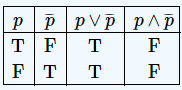
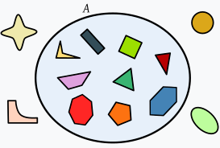
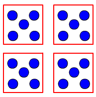
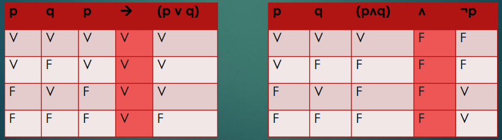

Lógica
La lógica es una rama de la filosofía y las matemáticas que se ocupa de los principios del razonamiento válido. Se centra en la estructura de los argumentos y en cómo las proposiciones se relacionan entre sí. Existen diferentes tipos de lógica, como la lógica proposicional, que estudia las relaciones entre proposiciones, y la lógica de predicados, que se enfoca en la relación entre objetos y sus propiedades. En programación y computación, la lógica es fundamental para el desarrollo de algoritmos, el diseño de circuitos y el procesamiento de información.
Equivalencias
Las equivalencias son relaciones que se establecen entre diferentes expresiones lógicas que tienen el mismo valor de verdad. Por ejemplo, las leyes de De Morgan son equivalencias que permiten transformar expresiones lógicas. Estas equivalencias son esenciales en la simplificación de circuitos lógicos y en la optimización de algoritmos. Conocer las equivalencias permite también facilitar la interpretación de proposiciones complejas.
Equivalencias Lógicas
Este término se refiere específicamente a las relaciones de equivalencia entre proposiciones en lógica. Dos proposiciones son equivalentes si tienen el mismo valor de verdad en todas las interpretaciones. Esto se puede expresar mediante la forma simbólica (p ↔ q). Las equivalencias lógicas son útiles en la simplificación de expresiones, permitiendo transformar proposiciones complejas en formas más simples sin cambiar su significado. Ejemplos incluyen la equivalencia de p ∧ q con ¬(¬p ∨ ¬q).
Conjuntos
Un conjunto es una colección de elementos que comparten una propiedad común. En matemáticas, los conjuntos se utilizan para agrupar objetos y estudiar sus propiedades. Existen diferentes tipos de conjuntos, como conjuntos finitos e infinitos. Las operaciones básicas con conjuntos incluyen la unión (A ∪ B), que combina todos los elementos de dos conjuntos; la intersección (A ∩ B), que incluye solo los elementos comunes; y la diferencia (A - B), que incluye los elementos de A que no están en B. Estas operaciones son fundamentales en diversas áreas de las matemáticas y la lógica.
Enteros y División
Los números enteros son un conjunto de números que incluyen todos los números naturales (0, 1, 2, ...), sus opuestos (-1, -2, ...) y el cero. La división es una de las operaciones fundamentales de la aritmética. Al dividir un número entre otro, se busca cuántas veces cabe el divisor en el dividendo. Es crucial entender cómo se comportan los números enteros bajo la división, ya que no todos los resultados son enteros; por ejemplo, 7 dividido por 2 da como resultado 3.5. Además, la división por cero no está definida y causa indeterminación en matemáticas.
Tablas de Verdad
Una tabla de verdad es una herramienta utilizada en lógica para mostrar todos los posibles valores de verdad de una proposición lógica compuesta. Cada fila de la tabla representa una combinación de valores de entrada (verdadero o falso) y su resultado correspondiente. Las tablas de verdad son especialmente útiles para verificar la validez de argumentos y para simplificar expresiones lógicas. Por ejemplo, una tabla de verdad para la proposición (p ∧ q) mostrará todos los casos posibles para p y q y el resultado de su conjunción.
